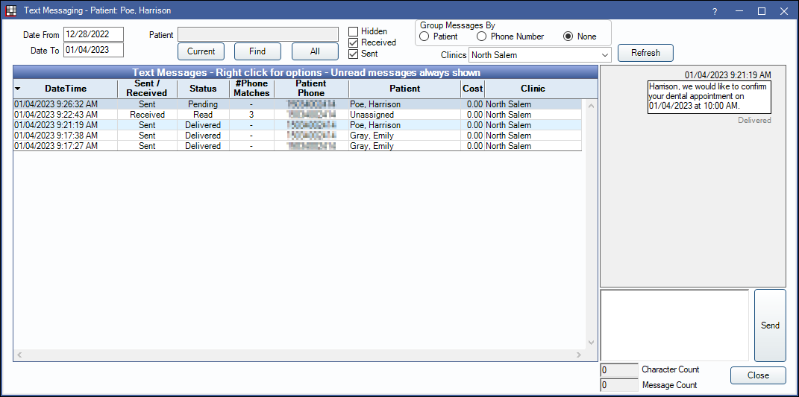
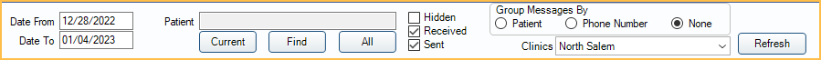
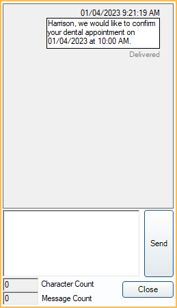

Text Messaging Mailbox
Use the Text Messaging Mailbox to view the history of sent and received text messages.
In the Main Toolbar, click the Text dropdown. Select an option.
The option selected in the dropdown determines which messages can be viewed upon opening:
- Text Messages All: View all sent and received messages.
- Text Messages Received: View received messages only. An orange notification shows in the toolbar when there are unread text messages.
- Text Messages Sent: View sent messages only.
From this window, users can also reply to messages, block numbers, and attach unassigned messages to patients.
Filters
Use the filters to determine which messages display.
Date From / To: Show text messages sent or received within a specific date range.
Patient: Filter by patient.
- Current: Show texts for the patient currently selected in Open Dental. If patient is part of a family, the guarantor is selected.
- Find: Select a different patient.
- All: Show texts from all patients.
Hidden / Received / Sent: Check to show Hidden, Received, and Sent messages.
Group Messages By:
- Patient: Show one row per patient.
- Phone Number: Groups messages by number and displays all patient that share the number.
- None: Show every message per row.
Clinics: Filter by one or more clinics.
Click Refresh to update the results.
Text Messages Grid
The grid results update based on filters set above.

Up to 100 messages display at a time. When there are more than 100 messages, use the navigation arrows above the grid to scroll through pages. Bold messages indicate unread messages. Click any header to sort.
- DateTime: Displays the date and time the last text was sent or received.
- Sent / Received: Only displays when Group Messages By is set to None. Displays whether the message was rent or received.
- Status: Displays whether the message is Sent, Received, or Pending.
- #Phone Matches: Only displays when Group Messages By is set to None. Displays a number if multiple patients share the same number. Right-click and select Change Pat to associate a specific patient.
- Patient Phone: Displays the phone number for the patient.
- Patient: Displays the patient name.
- Messages are automatically linked to a patient when phone numbers are an exact match.
- If multiple family members have matching numbers, it will attach to the guarantor.
- If multiple patients across two or more families have the same number, or there is no patient with a matching number, the patient will be Unassigned.
- Cost: Only displays when Group Messages By is set to None. Displays the cost of the message sent. See Integrated Texting Q and A for how cost is calculated.
- Clinic: Displays the clinic associated to the patient.
- Latest Message: Only displays when Group Messages By is set to Patient or Phone Number. Displays the last message sent or received.
Right-click options: These options are only available when Group Messages By is set to None.
- Change Pat: Change the patient attached to a received message.
- Mark Read/Unread: Change the status of a received message.
- Hide/Unhide: Hide or show the message in the list. Text messages cannot be deleted.
- Go to Patient: Make the selected patient active.
- Block Number: Block incoming text messages from specific mobile numbers. The sender will see the text message as delivered, but it will not appear in Open Dental. Blocked messages cannot be recovered.
View Messages
Click on a row to view the conversation thread on the right.
Sent and received messages with the patient will display. Messages sent to patients will include a status in gray of Delivered, Sent, or Not Delivered.
To send a reply, enter the message then click Send. The character and message count will update.
If the monthly texting limit is reached, users will be prompted to increase the limit in the SMS Warning Amount.
If a message has a failed status, see Integrated Texting Troubleshooting to troubleshoot why.